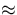

Figure 1(a) is an example of the domain structure observed during the magnetization reversal of the NiO/NiFe bilayer along the direction indicated by the arrow. In this picture, the domain configuration is entirely associated with the defect structure of the sample, revealed in reflected light [Fig. 1(b)] and in transmitted polarized light [Fig. 1c]. In Figure 1(b) NiFe surface steps parallel to the [100] direction, which are associated with slip lines of screw dislocations are revealed. Figure 1c shows the birefringence picture due to microstresses caused by edge dislocations which are drawn up along and slip planes. Both edge and screw dislocations were introduced into the MgO substrate during cleaving before the NiO/NiFe bilayer deposition. The screw dislocation steps shown in Fig. 1(b) indicate that these MgO dislocations propagate through the NiO and permalloy films during their epitaxial growth. It is important to note the edge dislocations play the role of domain nucleation centers despite the fact that they don't introduce steps on the film interface.
The NiO/NiFe hysteresis loop measured along the [010] direction, which coincides with the direction of a magnetic field applied during the bilayer growth, is shown in Fig. 2(a). It exhibits an exchange shift (HE = 20 Oe) and an enhanced coercive force (HC = 26 Oe) compared to the coercivity of the MgO/NiFe system (HE F = 0, HC F = 2 Oe). The MOIF patterns in Figs. 2(b)-2(h) display the behavior of the domain structure of the NiO/NiFe bilayer during the magnetization reversal process. Letters on the hysteresis loop [Fig. 2(a)] refer to the conditions of the corresponding MOIF patterns. Three principal features of the bilayer magnetization reversal are worth noting. (1) The reversal occurs as a result of nucleation and subsequent growth of domains having a new magnetization orientation. Nuclei of domains with reversed magnetization form at a magnetic field close to the coercive field [Fig. 2(b)], and their growth encompasses the whole sample within a small field range of H, resulting in an almost square hysteresis loop. This implies that the magnetization reversal is limited by the nucleation process. (2) An asymmetry is observed in the activity of the domain nucleation centers. When the magnetic field is aligned against the unidirectional anisotropy axis, the nucleation of domains occurs at the film edges (or other chemical inhomogeneities), Fig. 2(b). However, when the field is aligned along this axis, the domain nucleation takes place at dislocation slip planes and their intersections, Fig. 2(f). (3) The dislocations not only influence the domain nucleation but also impede the domain wall motion. As a result, the specific head-to-head domain walls consist of sections parallel to the dislocation slip plane.
It is important to note that the NiFe film grown on MgO without an AF NiO layer has a similar dislocation structure, but its domain structure behaves differently. In this latter film, there is no shift in its hysteresis loop, its coercive force is very small (HC F = 2 Oe), and the dislocation structure did not exhibit much influence on the domain wall behavior. In the case of the MgO/NiFe film, the formation of domains with reversed magnetization was observed at film edges for both applied field directions parallel to the easy axis, and there was no asymmetry in the activity of its nucleation centers. These observations imply that the dislocations in the NiO/NiFe bilayer influence primarily the spin configuration statics and dynamics in the AF layer which is exchange- coupled with the spins in the FM layer.
The hysteresis loop and MOIF images taken during magnetization reversal along a direction perpendicular to the unidirectional anisotropy axis in the NiO/NiFe bilayer are shown in Fig. 3. In this case, a much different reversal mechanism was found. The hard axis magnetization curve was nearly linear and saturated near 2HE. The hysteresis loop displayed almost zero coercivity and no field shift. The MOIF images show that the reversal proceeds by incoherent magnetization rotation. Fig. 3(b) shows the MOIF image for the bilayer when in the saturated state. Note, there is no vertical component to the magnetostatic field in this case at the sample edge (which is parallel to the right side of the picture frame, but indented  20 µm). When the magnetic field was reduced, the non-homogeneous MOIF image [Fig. 3(c)] corresponding to the dislocation structure (Fig. 1) appeared. Since the directions of the magnetization vectors in Fig. 3(c) are not parallel to the unidirectional anisotropy axis, it is obvious that the dislocation microstresses have changed the effective magnetic anisotropy. However, at zero applied field the magnetization becomes nearly uniform and is aligned along the unidirectional anisotropy axis. This alignment is revealed by the presence of the stray field induced vertical white stripe at the right-hand edge of the film [Fig. 3(d)].